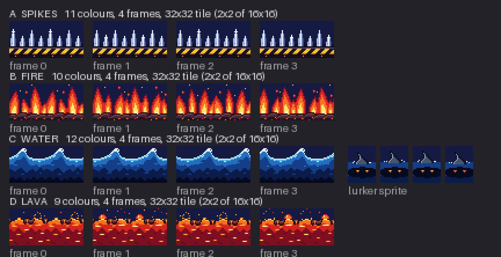
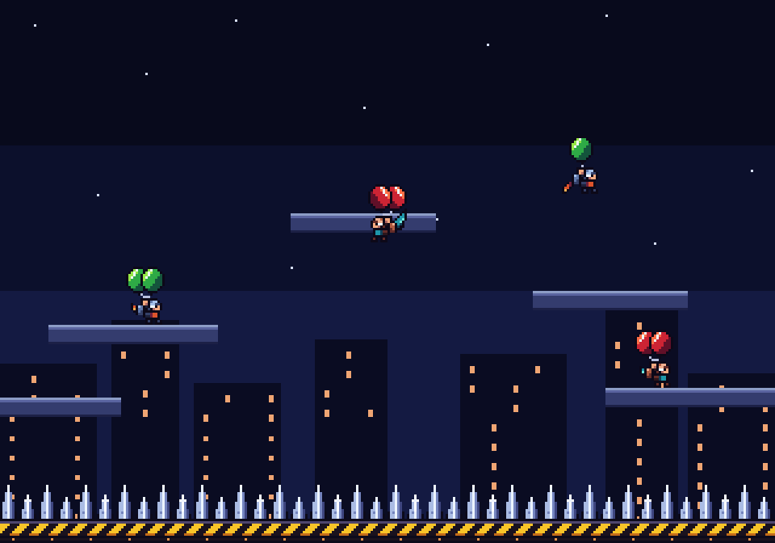
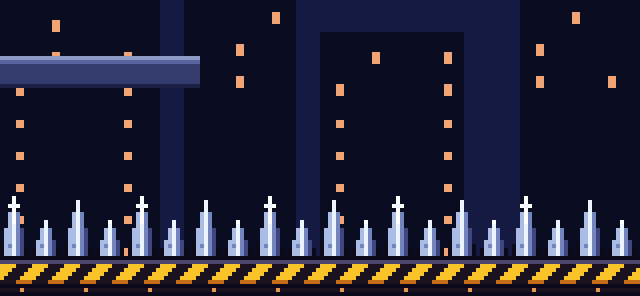
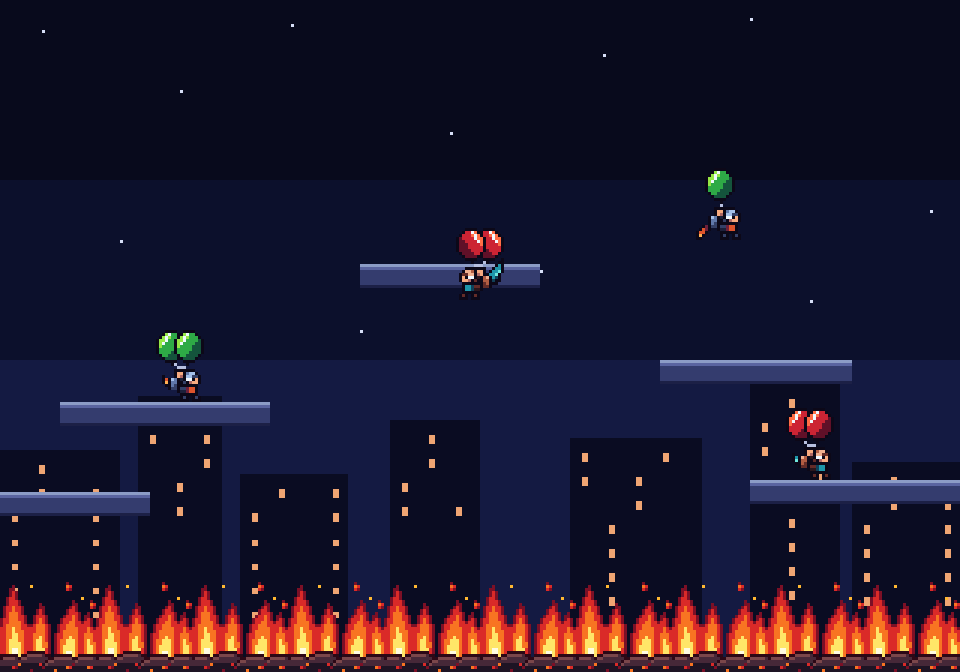
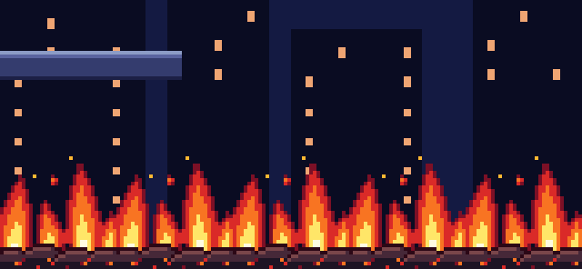
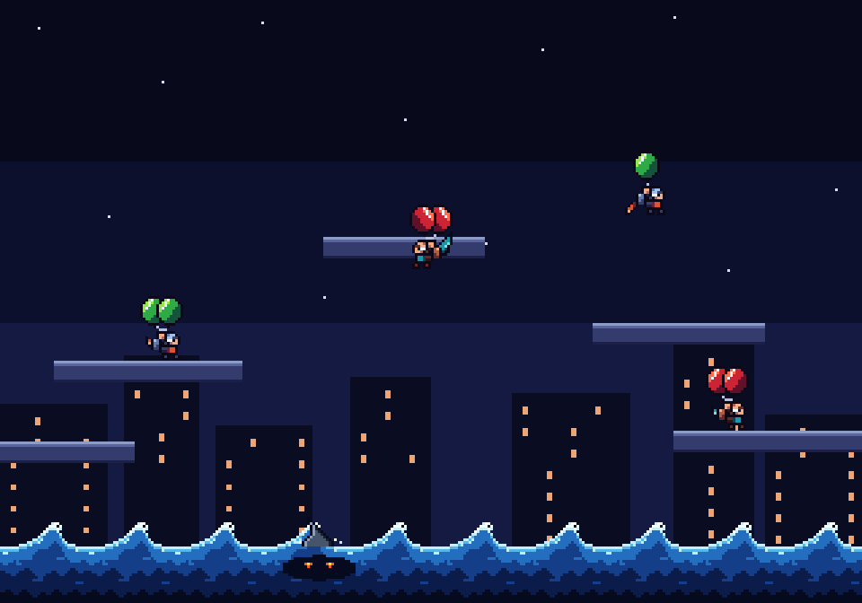
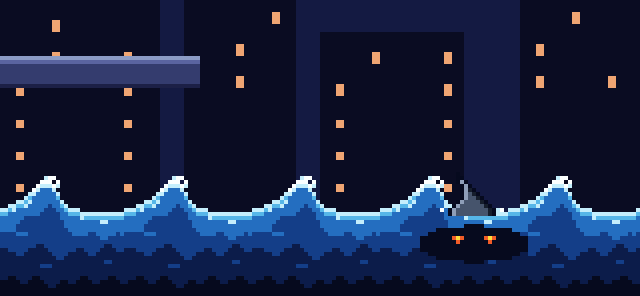
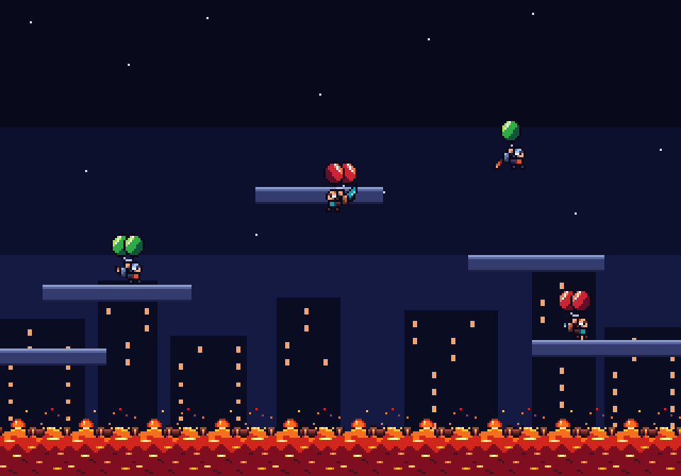
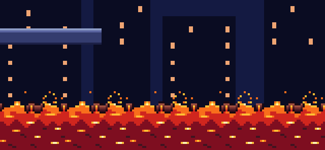

Four options for the deadly strip at the screen bottom. Each is a seamless 32x32 tile, 4 looping frames, at most 15 colours.

Glint runs along the tips. Weak point: thin at 1x, dark side blends into the buildings.


Flame tongues, sparks, glowing coal cracks. Strongest contrast. No glow on the buildings yet.


Rolling foam wave plus a lurker sprite (fin, glowing eyes). Matches the design doc. Weak point: crest repeats every 32 px.


Bubbles swell and pop, crust rafts, pulsing streaks. Weak point: surface busy, band edges look mechanical.

